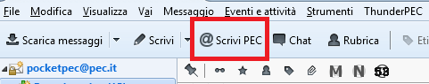
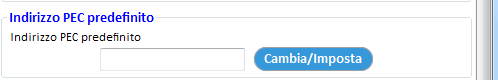
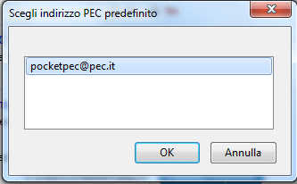
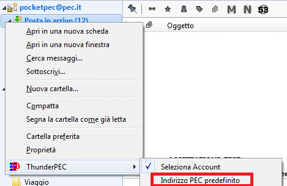
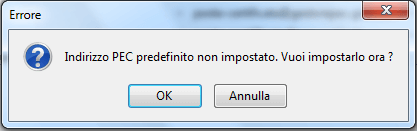
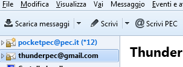
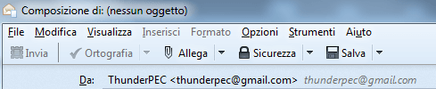
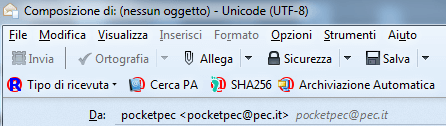

Come tutti i più comuni client di posta elettronica, Mozilla Thunderbird permette la configurazione di più caselle. Per questa ragione, è necessario abilitare ThunderPEC sulle caselle di posta certificata in modo che il suo funzionamento non interferisca con le caselle di posta normale.
Da questa versione, è possibile definire l’indirizzo PEC predefinito che sarà utilizzato come mittente quando utilizziamo il nuovo pulsante Scrivi PEC

Possiamo settare l’indirizzo PEC predefinito, scelto tra gli indirizzi sui quali è attivo ThunderPEC, attraverso il menu Impostazioni di ThunderPEC


o attraverso il menu contestuale associato alla casella di posta

oppure attraverso la finestra di notifica che compare quando premiamo il pulsante Scrivi PEC senza aver associato alcun indirizzo di posta certificata

Ad esempio, se abbiamo due caselle di posta configurate (thunderpec@gmail.com e pocketpec@pec.it)

premendo il pulsante Scrivi si aprirà la finestra di composizione con thunderpec@gmail.com come mittente;

se premiamo il pulsante Scrivi PEC, si aprirà la finestra di composizione con pocketpec@pec.it come mittente anche se la casella thunderpec@gmail.com è quella predefinita in Thunderbird
